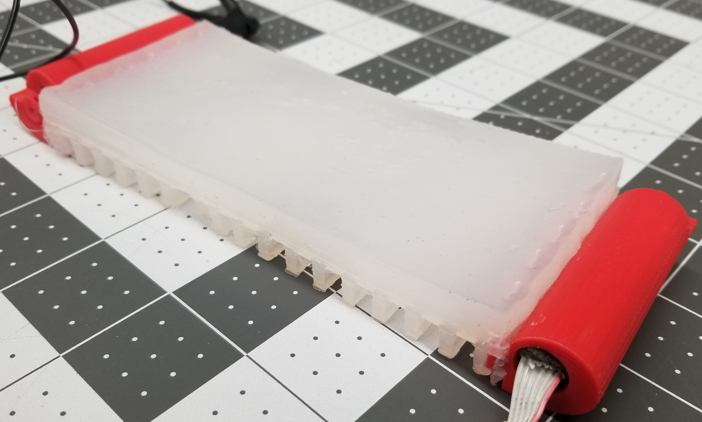

Research
What's new in the lab?
03.07.2018: research update (biomechanical instrumentation brace)
Current research has taken a backseat to submitting journal papers and patent applications on my prosthetic leg load cell. My primary focus when that's completed is kitting out my instrumentation orthotic with a full sensory suite for gait biomechanics capture sans external reference frame to gather a sufficiently large database to train a hierarchical Bayesian classifier on stance-to-stance and gait-to-gait transitions using the same discretized pattern generator model used to control the transfemoral prosthesis I'm currently working on. Stay tuned for more.
03.01.2018: slabo paper submitted
After some down-to-the-wire revisions and polishing, my labmate David and I have submitted a paper to IROS proposing a standardized fabrication procedure for electromechanically actuated soft robotics, much like the Soft Robotics Toolkit has for pneumatically actuated ones. We'll be uploading more resources to our lab GitHub over the next few weeks, in the hopes of making the fabrication of soft motor-tendon actuated robots accessible enough that it can be done at home with minimal investment. When the paper finishes the review process, I will post it on here for the public's perusal.